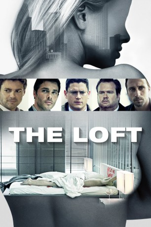

#3200 The Loft
 
 IMDB-Wertung: 6.3 / 10
IMDB-Wertung: 6.3 / 10  Metascore: 24
Metascore: 24 
Die fünf verheirateten Männer Chris, Luke, Vincent, Filip und Marty teilen neben ihrer Freundschaft noch etwas anderes: Gemeinsam haben sie sich ein luxuriöses Loft gemietet, das sie für Schäferstündchen mit ihren jeweiligen Geliebten nutzen, natürlich ohne das Wissen ihrer Ehefrauen. Es gibt nur fünf Schlüssel für das Apartment, verteilt auf die Männer, ansonsten hat niemand eine Ahnung von dem geheimen Treffpunkt. Eines Tages liegt die nackte Leiche einer unbekannten Frau in der Wohnung, offenbar als Ergebnis eines bestialischen Mordes. Jeder der Freunde schwört, dass er nichts damit zu tun hat. Doch nach und nach kommt es unter den Fünf zu gegenseitigen Verdächtigungen, den Mord begangen zu haben. Eine brutale Hetzjagd beginnt…
Jahr: 2014
Dauer: 108 Minuten
FSK: 16
Land: Belgien Studio: SquareOne EntertainmentTonspuren: DTS - ,
Untertitel: Deutsch, Englisch,
Auflösung: 1080p (1920x800) Größe: 9512 MB
Genre: Thriller, Liebe, Mystery
Regisseur: Erik Van Looy
Drehbuch: Bart De Pauw, Wesley Strick
Soundtrack: John Frizzell
Darsteller:
 Karl Urban als Vincent Stevens
Karl Urban als Vincent Stevens James Marsden als Chris Vanowen
James Marsden als Chris Vanowen Wentworth Miller als Luke Seacord
Wentworth Miller als Luke Seacord Eric Stonestreet als Marty Landry
Eric Stonestreet als Marty Landry Matthias Schoenaerts als Philip Trauner
Matthias Schoenaerts als Philip Trauner Isabel Lucas als Sarah Deakins
Isabel Lucas als Sarah Deakins Rachael Taylor als Anne Morris
Rachael Taylor als Anne Morris Rhona Mitra als Allison Vanowen
Rhona Mitra als Allison Vanowen Valerie Cruz als Barbara Stevens
Valerie Cruz als Barbara Stevens Kali Rocha als Mimi Landry
Kali Rocha als Mimi Landry- Elaine Cassidy als Ellie Seacord
 Margarita Levieva als Vicky Fry
Margarita Levieva als Vicky Fry- Kristin Lehman als Detective Huggins
 Robert Wisdom als Detective Cohagan
Robert Wisdom als Detective Cohagan Ric Reitz als Joel Kotkin
Ric Reitz als Joel Kotkin Graham Beckel als Hiram Fry
Graham Beckel als Hiram Fry- Kathy Deitch als Dana
 Dora Madison als Zoe Trauner
Dora Madison als Zoe Trauner- Cindi Woods als Mrs. Fry
 Laura Cayouette als Mrs. Kotkin
Laura Cayouette als Mrs. Kotkin Griff Furst als Zoe's Friend
Griff Furst als Zoe's Friend Leticia Jimenez als Bar Slickster Girl
Leticia Jimenez als Bar Slickster Girl- William Scharpf als Security Guard
 Trace Cheramie als Security Guard
Trace Cheramie als Security Guard Lauren Alexandra als Real Estate Agent , uncredited
Lauren Alexandra als Real Estate Agent , uncredited- Monica Rene'e Anderson als Restaurant Patron , uncredited
- Astrid Bryan als Uninterested Girl , uncredited
- Stephanie Claire als Girl in Bar , uncredited
 Julie Ann Doan als Motorist , uncredited
Julie Ann Doan als Motorist , uncredited- Alexander Eldimiati als Police Officer Spencer , uncredited
- Moses Munoz als Casino Patron , uncredited
 Jay Oliver als Casino Patron , uncredited
Jay Oliver als Casino Patron , uncredited Nathan Alan Thomas als Waiter , uncredited
Nathan Alan Thomas als Waiter , uncredited- Barbara Dzikanowice als Prostitute
- Kim Ormiston als Party Girl
- Misty Ormiston als Party Girl
- Eric Dickinson als Zoe's Friend
- Dennis Bagneris als Bar Slickster Guy
- Hillary Bosarge als Zoe's Friend , uncredited
- Joshua Braud als Coffee House Guy , uncredited
- Felder Charbonnet als Detective , uncredited
- Edward J. Clare als Patron , uncredited
- Emily D. Haley als Casino Patron , uncredited
- Gene Kevin Hames Jr. als Craps Dealer #1 , uncredited
- John C. Klein als Gallery Patron , uncredited
- Cynthia LeBlanc als Police Detective / Shopper / Casino Patron , uncredited
- Elton LeBlanc als Casino Player / Shopper , uncredited
- Stephen Livaudais als Dr. Steve , uncredited
- Taylor Newman als Casino Patron , uncredited
- Jessica Poumaroux als Bit Part , uncredited
Datei: X:\3-Trilogie(G-M)\Loft\Loft, The (2014, FSK16, 1920x800).mkv seit 12.02.2016
Festplatte: HD Collection-2(A-Z)-3(A-M)
 Alle Filme aus Gruppe '3-Trilogie(G-M)\Loft'
Alle Filme aus Gruppe '3-Trilogie(G-M)\Loft'